INSEAD MBA · Identifying New Business Models · Session 01
Introduction and Four Myths
Stephen Chick · Technology and Operations Management · stephen.chick@insead.edu
About Steve Chick
Research, teaching, and advising in analytics, sustainability, and entrepreneurship.
sechick.github.io
Taught · studied
Worked · built · advised · invested
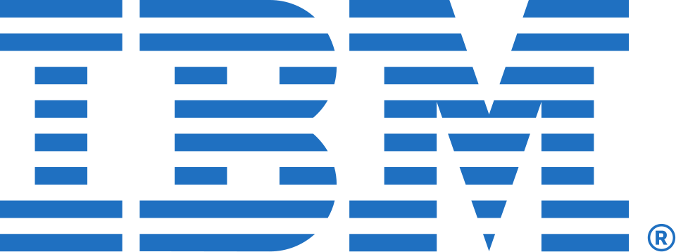
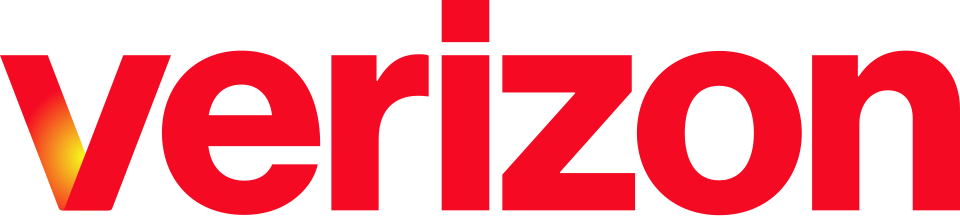
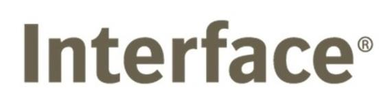
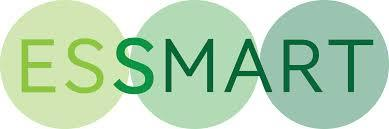
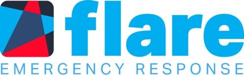
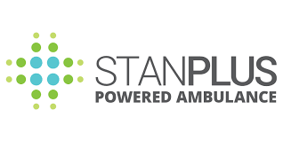
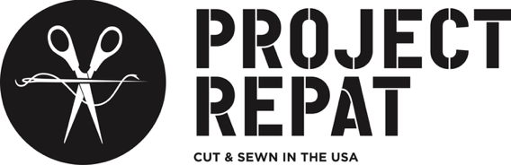
02
The lab and the field
I work on the operations of innovation.
Ray C. Anderson Center for Sustainable Business
Faculty Director, Georgia Tech Scheller.
CREATE-X
Georgia Tech’s startup launchpad. You’ll meet one of its ventures this afternoon.
Startup mentor
Founders from INSEAD, MIT, and Georgia Tech.
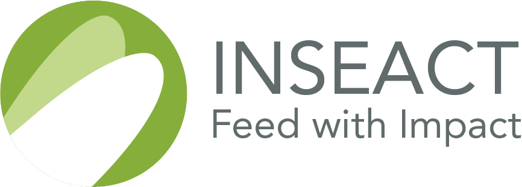
acquired 2023
Several of those founders sat where you’re sitting. This week runs the same playbook they used.
03
What is the Goal?
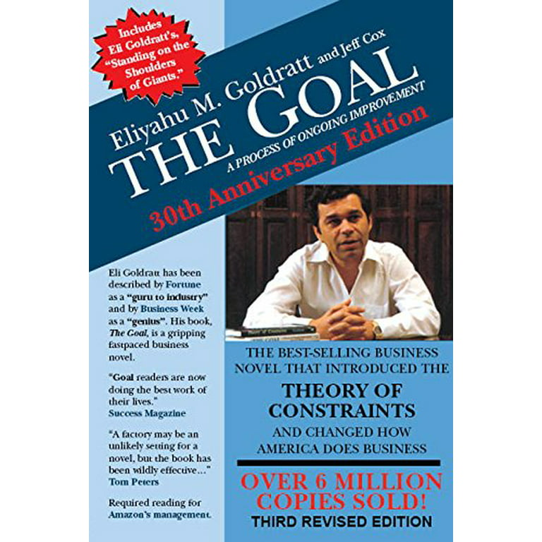
Cover: Eliyahu M. Goldratt & Jeff Cox, The Goal: A Process of Ongoing Improvement (30th Anniversary Edition). Shown for classroom identification.
04
What is YOURthe Goal?
05
INSEAD and entrepreneurship
INSEAD was founded by the father of venture capital.
ARD, 1946: the first publicly funded venture capital firm.
$70,000 into DEC, 1957: worth ≈ $355 million at the 1968 IPO, roughly 500×.
Harvard Business School professor: ~7,000 students; WWII Brigadier General.
INSEAD, founded 1957: first MBA class, 1959, at Fontainebleau.
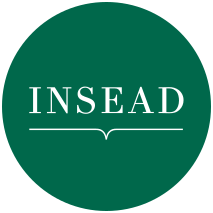
“An average idea in the hands of an able man is worth much more than an outstanding idea in the possession of a person with only average ability.”
Georges F. Doriot, c. 1962.
Sources: HBS Baker Library, Georges F. Doriot Collection · Wikipedia: ARD (inc. June 1946), DEC ($70k, 1957; ≈$355M at 1968 IPO) · insead.edu: founded 1957, first class 12 Sept 1959. Quote: ARD annual report, 1949.
06
There are two kinds of managers.
Dentist(service provider)
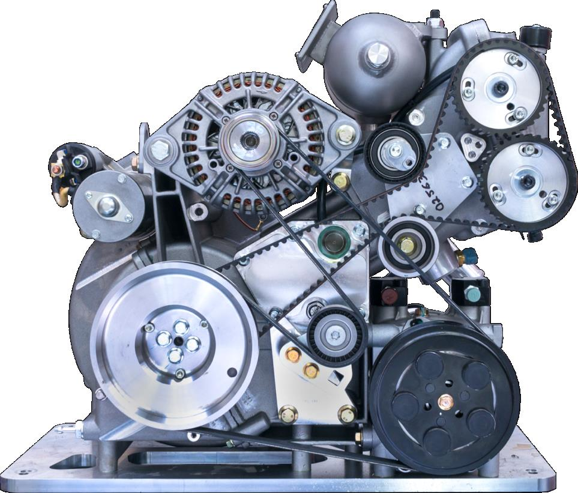
Capitalist(system designer)
You need to be a bit of both. This week, you are capitalists.
A story from James Stone, one of Georges Doriot’s students.
07
Dentist-vs-capitalist story: James M. Stone, who studied under Georges Doriot at Harvard Business School (en.wikipedia.org/wiki/Georges_Doriot). Engine photo: GT Business Lab course materials.
What is a business model?
Everyone uses the term. Few can define it.
08
You have read this term every week this year
“Business model” is doing heavy lifting in the news.
21 January 2026
OpenAI CFO Defends Ads in ChatGPT as ‘Strong Business Model’
1 February 2026
Will Europe’s planned luggage rules kill the budget airline business model?
20 May 2026
LIV Golf to pitch new business model amid bankruptcy report
8 June 2026
This Restaurant Stopped Charging for Food. And Profits Are Up.
From the article: “…a solution to a broken industry-wide business model as well as a critique of that model.”
Whole industries are renegotiating how supply meets demand.
Headlines verbatim: Bloomberg, 21 Jan 2026 (bloomberg.com/news/articles/2026-01-21/openai-cfo-defends-ads-in-chatgpt-as-strong-business-model) · Financial Times, Peter Campbell, 1 Feb 2026 (ft.com/content/173ac742-5fdd-420b-a0a9-031a52fee6cf) · ESPN, Mark Schlabach, 20 May 2026 (espn.com/golf/story/_/id/48826532) · The New York Times, Brett Anderson, 8 Jun 2026 (nytimes.com/2026/06/08/dining/post-modern-times-minneapolis-free-food.html); interior sentence quoted verbatim from the article.
09
Of many definitions, this is the one we’ll use
“From an operations point of view, a business model is the logic of the firm: the way it operates and how it creates value for its stakeholders. It is a set of processes, activities, and incentives used to match supply and demand.”
It turns inputs into outputs in pursuit of a goal. It has many interacting parts.
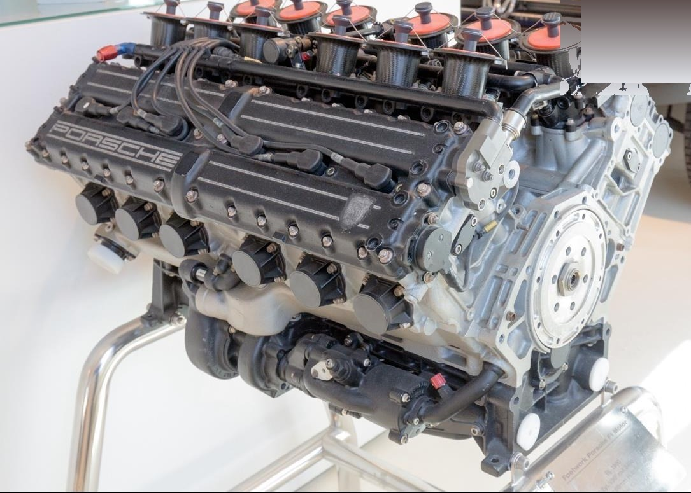
And how is a business model not like an engine?
People are the moving parts.
11
What is a startup?
A temporary organization that exists to search for a business model that is scalable.
A search process, not a smaller version of a big company. Howard Stevenson: “the pursuit of opportunity beyond resources controlled.”
12
Before any method, a question
Why are you interested in entrepreneurship?
Turn to your neighbor. Two minutes each.
13
June 2026: Doriot’s game is changing again
AI is rewriting the rules in front of you.
Gamma
$2.1B
valuation · ~50 people · profitable
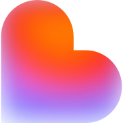
Lovable
$400M ARR
146 people · $100M added in one month
Cursor
$1B+
annualized revenue · ~300 people
Midjourney
~$500M
est. revenue · ~100 people · no VC ever raised
Safe Superintelligence
$32B
valuation · no product released
Sam Altman, 2024
“In my little group chat with my tech CEO friends, there’s this betting pool for the first year that there is a one-person billion-dollar company.”
Sources: TechCrunch 10 Nov 2025 (Gamma: $2.1B valuation, $100M+ ARR, ~50 staff, profitable) · TechCrunch 11 Mar 2026 (Lovable: $400M ARR, 146 FTE) · CNBC 13 Nov 2025 (Cursor maker Anysphere: crossed $1B annualized revenue, just over 300 employees, $29.3B valuation) · Sacra & Contrary Research estimates (Midjourney: ~$500M 2025 revenue, ~100 staff, no outside venture funding; company does not disclose) · TechCrunch 12 Apr 2025 (SSI: $32B valuation) · Altman quote: Fortune, 4 Feb 2024.
14
What the evidence says so far
AI cuts the cost of building, shifts business models, and shrinks teams.
01
Building is cheap. In Y Combinator’s Winter 2025 batch, a quarter of startups had codebases about 95% AI generated.
Jared Friedman, Y Combinator, March 2025
02
Business models shift. Nadella expects per-seat apps to collapse as logic moves to agents; vendors now sell outcomes.
Satya Nadella, Microsoft · BG2 podcast, December 2024
03
Teams stay small. Gamma reached a $2.1 billion valuation and $100 million ARR with about 50 employees, profitably.
Gamma Series B announcement, November 2025
Building is getting cheap. Choosing what to build is not.
Sources: J. Friedman (YC managing partner) on ~25% of the W25 batch shipping ~95% AI-generated codebases: TechCrunch, 6 Mar 2025 · S. Nadella on per-seat business applications collapsing in the agent era: BG2 Pod w/ B. Gerstner & B. Gurley, Dec 2024 (paraphrased); outcome pricing: Chen & Gupta, “AI leads a service-as-software paradigm shift,” Foundation Capital, 2024 · Gamma: $68M Series B at $2.1B valuation, $100M+ ARR, ~50 staff, profitable 2+ years: Business Wire & TechCrunch, 10 Nov 2025.
15
The four myths
Four entrepreneurship myths.
16
Myth № 1 · Process
Great ideas strike you randomly.
Great ideas are generated in volume, then selected.
17
The story we tell ourselves
An apple falls. You code all night. You ring the bell.
The expectation
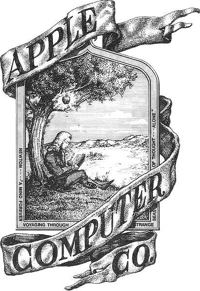
The strike of genius. This engraving was Apple’s first logo, 1976. The montage. Forty-eight sleepless hours of furious building.The bell. IPO day, confetti, history.
The reality Founders generate ideas in volume, select the strongest, and refine them. You cannot schedule a strike of genius. You can schedule volume.
Newton engraving: Apple Computer’s first logo, drawn by co-founder Ronald Wayne, 1976 (public domain, Wikimedia Commons).
18
Most management problems
You can clearly see the peak.
Pick the summit, plan the route, climb.
Photo: Wild Goose Island, Saint Mary Lake, Glacier National Park. Andrew Parlette, CC BY 2.0, via Wikimedia Commons.
19
Entrepreneurship
Find the deepest point of a lake you have never seen.
All you have: a rowboat, a rope, and a rock. How would you do it?
Cast wide, sound everywhere
Take many measurements
Iterate toward promise
Assume a continuous bottom
You don’t care about the average sounding. Only the deepest one. Ninety-nine duds and one gem is a great process.
Same photograph as the previous slide, enlarged: Wild Goose Island, Saint Mary Lake, Glacier National Park. Andrew Parlette, CC BY 2.0, via Wikimedia Commons.
20
What search actually looks like
The dream is one strike of lightning; the reality is trial and error.
Pharma digs the holes for a living. This is the search for Zocor.
The dream
The reality
Funnel: PhRMA, Drug Discovery and Development: Understanding the R&D Process (2007), the industry-standard pharma R&D funnel (5,000–10,000 compounds screened, ~250 preclinical, ~5 clinical, 1 approved, 10–15 years). Zocor (simvastatin, Merck) FDA-approved December 1991 (FDA NDA 019766); story per Terwiesch & Ulrich, Innovation Tournaments (Harvard Business Press, 2009). Photo: “Lightning bolt” by Ayorinde Ogundele, Wikimedia Commons, CC BY-SA 4.0.
21
Not just pharma
Nemo was found, not struck.
Pixar weighs about 500 one-sentence pitches a year. Round after round, a handful become films.
Source: Terwiesch & Ulrich, Innovation Tournaments (Harvard Business Press, 2009): Pixar considers ~500 one-sentence pitches per year; the Cars one-sentence pitch is the book’s worked example.
22
Found a promising sounding? Keep sounding.
The winners are then refined, relentlessly.
Supersonic
A hair dryer.
103 engineers · 50 months
1,010 miles of real human hair tested
£40,000 of hair tresses, briefly a global hair shortage
Georgia Tech
An app that interrupts a craving.
Two engineering students, a $20k CREATE-X pre-seed
3,000+ paid subscribers within months of launch
$1.4M seed, refined from a class project, version by version
Sources: Dyson engineering story (lb.dyson.com: 103 engineers, 50 months, 1,010 miles, £40k of hair) · Georgia Tech College of Engineering news, Apr 2021 (Reframe: Gao & Pradeep, $20k CREATE-X, 3,000+ subscribers, $1.4M seed).
23
Girotra, Terwiesch and Ulrich, Management Science 2010
Four levers run the idea factory.
01
Take more draws
Generate more opportunities.
02
Shift the mean
Raise the average quality.
03
Raise the variance
Wider spread, weirder ideas.
04
Evaluate better
Select among them more accurately.
We care only about the right tail: the quality of the best idea, not the average.
“Idea Generation and the Quality of the Best Idea.” Pre-read: Innovation Tournaments, ch. 3.
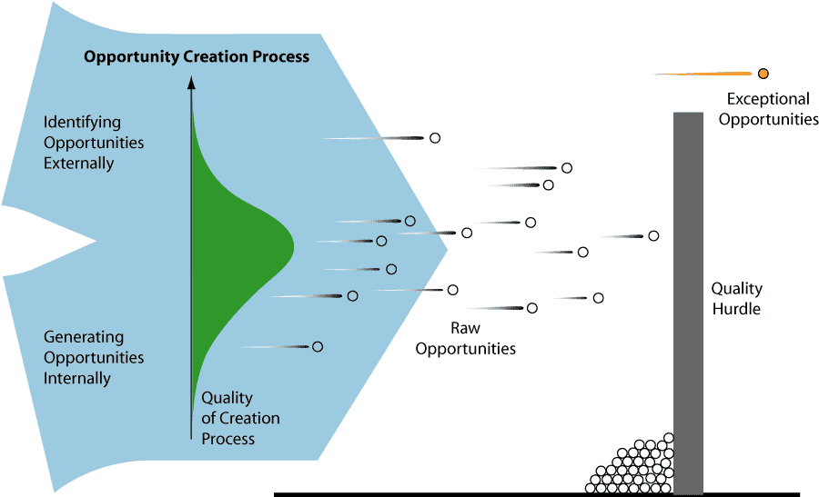
Girotra, Terwiesch & Ulrich, “Idea Generation and the Quality of the Best Idea,” Management Science, 2010. Course pre-read: Innovation Tournaments, ch. 3.
24
This class, as a funnel
200 ideas walk in. Ten teams walk out.
200 ideas → 40 sixty-second pitches → 10 teams of 4 → final pitches Friday
25
16–19 June · deliverables
Four day plan
You are here
Tue 16
Generate
Sessions 01–02: myths, the idea factory, tournament launch
Tonight: finish 20+ ideas, pick 5, submit as A1 · due 23:59
Register on Torneio · live in Session 02
Wed 17
Select
A2 · rate 75+ ideas, 0–10 · due 13:30
A3 · 60-second pitch + one PDF slide · upload by 16:30 for the merged pitch deck · credit until 17:30
A4 · multivote, in class · 10 teams of 4 form
Thu 18
Refine
A5 · Business Thesis + Value Creation Analysis · due 21:00
Customer discovery, live in class
Fri 19
Validate
A6 · peer review · due 8:30
A7 · concept + prototype pitch · due 8:30
A8 · community survey, in class
Validated theses
26
Girotra, Meincke, Terwiesch and Ulrich · Wharton, 2023
GPT-4 out-ideated the MBAs.
Wharton’s tournament, rerun: 200 student ideas against 200 from GPT-4, physical products for college students under $50. College-age consumers rated all 400 blind on purchase intent.
The best 40 of all 400 ideas, ranked by purchase intent
Humans200 ideas in · mean intent 40.4%
5
GPT-4, plain prompt100 ideas in · mean intent 46.8%
15
GPT-4, seeded100 ideas in · prompt seeded with 7 highly rated student ideas · mean intent 49.3%
20
ChatGPT-assisted brainstorms produce narrower idea sets: across five experiments, the diversity drop was significant in 37 of 45 comparisons (Nature Human Behaviour, 2025).
Volume and average are now free. Variance and judgment are your job.
Sources: Girotra, Meincke, Terwiesch & Ulrich, “Ideas Are Dimes a Dozen: Large Language Models for Idea Generation in Innovation,” Wharton / Cornell Tech working paper, 2023 (SSRN 4526071): 200 student ideas vs. 100 GPT-4 ideas from a plain prompt and 100 seeded with seven highly rated student ideas; purchase intent rated by US college-age consumers, about 20 ratings per idea; pool means 40.4% / 46.8% / 49.3%; 35 of the pooled top 40 ideas came from GPT-4. Diversity: Meincke, Nave & Terwiesch, “ChatGPT decreases idea diversity in brainstorming,” Nature Human Behaviour 9, 1107–1109 (2025).
27
Myth № 2 · Generation
I need to find a new technology or a new market.
Existing products, existing markets, a new way to match them: Business Model Innovation.
28
We picture innovation as new technology or new design.
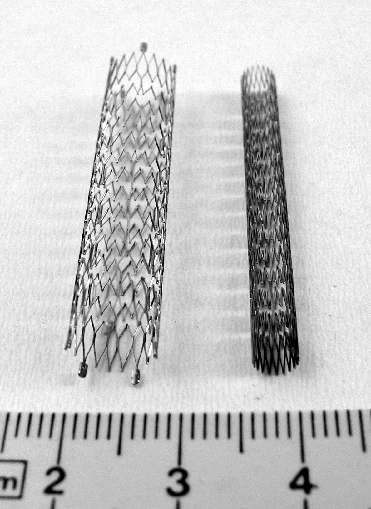
The stent NEW TECH
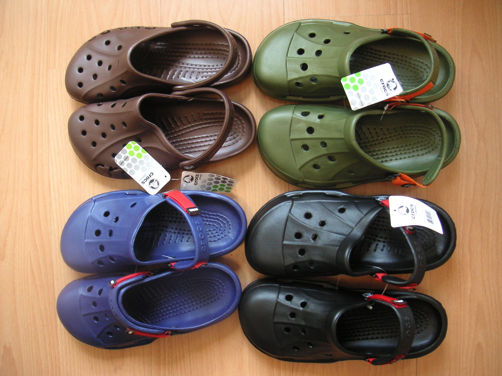
Crocs NEW DESIGN
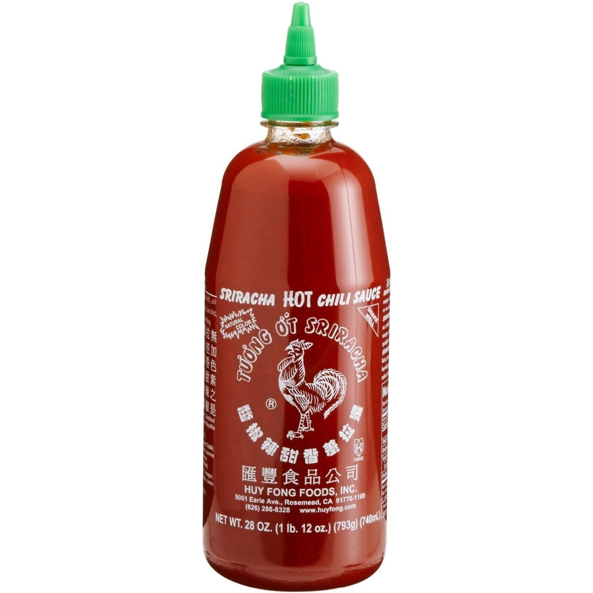
Sriracha NEW DESIGN
Frontier AI NEW TECH
Images: coronary stents, Frank C. Müller, Wikimedia Commons, CC BY-SA 2.5 · Crocs clogs, David (Kcdtsg), Wikimedia Commons, public domain.
29
An often overlooked way to innovate
BMI: existing products + existing needs + a new model to provision them.
Products
Needs
New model
BMI
Products: existing products and technology
Needs: existing market needs
New model: a new business model to provision them
No technology risk, no new-market risk, no R&D bill. And harder for incumbents to imitate.
We love this stuff: Girotra & Netessine, The Risk-Driven Business Model · Osterwalder, Business Model Generation
30
Existing products · existing markets · a new match
The business-model hall of fame.
design to rack in two weeks, not two seasons
retail rebuilt as a logistics and data machine
a free marketplace, monetized sideways
production itself as the innovation
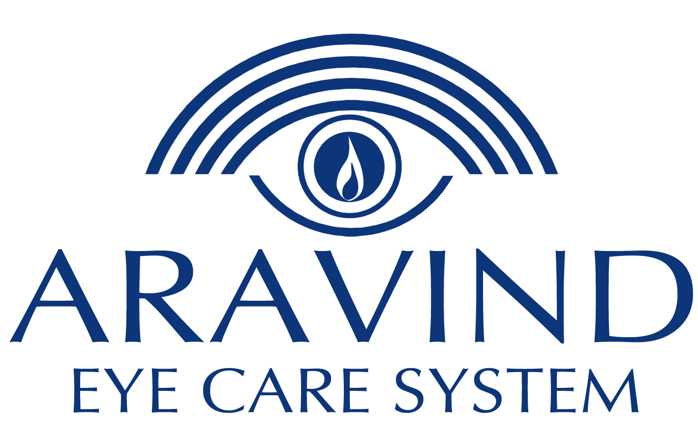
assembly-line eye surgery: world class, near free
one hernia operation, perfected for 80 years
sustainability ratings as market infrastructure · INSEAD alumni
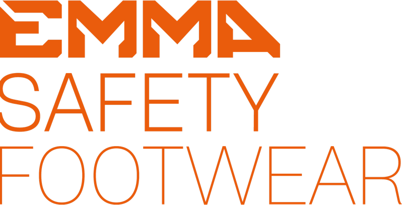
safety footwear as a service · we’ll meet them again
Same shirts, same surgeries, same shoes. Different match between supply and demand.
31
Girotra and Netessine, your pre-read
Four ways to re-match supply and demand.
When
Change the timeline
Uber is paid before the driver moves; taxi fleets waited weeks. Cash flow is a design choice.
Why
Change the incentives
Rolls-Royce sells thrust by the hour. Clinics get paid for outcomes, not visits.
What
Change the information
Zara postpones the commitment: styles are cut after demand is revealed, not two seasons ahead.
How much
Change the cost & revenue architecture
Dollar Shave Club turned razors into a subscription: same blades, a new way to charge.
Every pattern you’ll meet this week is one of these four moves.
“Four Paths to Business Model Innovation,” Harvard Business Review, 2014.
32
Myth № 3 · Selection
I’m a good judge of my own ideas.
The №1 startup killer: a founder in love with their own idea.
Ideas are best judged by a diverse crowd of the people they serve.
33
A quick test: which one had the better technology?
The best technology does not always win.
Sony Betamaxthe better picture
lost to
VHSlonger tapes, open licensing; over 90% of the US market by 1987
Signalthe security gold standard
lost to
WhatsApp3 billion+ users vs about 70 million
Segwayan engineering marvel
lost to
E-scooters157M shared rides in 2023 vs about 140k Segways ever sold
Apple Newtona decade early
lost to
Palm, then iPhonetiming and model beat brilliance
Your ranking and the market’s ranking will not match. Bet on the model, and let customers judge.
Sources: Wikipedia, videotape format war (VHS >90% US market by 1987) · Business of Apps / Wikipedia (Signal ~70M MAU; WhatsApp 3B+, 2025) · Wikipedia, Segway (~140k units, 2001–2020) · NACTO 2023 (157M shared micromobility trips, US/Canada).
34
Even the professionals can’t pick
Smart money loses two times out of three.
One square is one financing: 21,640 US venture financings, 2004–2013. Correlation Ventures.
65 lost moneyreturned less than 1× the capital (64.8% of financings)
31 made 1–10×25.3% returned 1–5×; another 5.9% returned 5–10×
4 made 10× or more2.5% at 10–20× · 1.1% at 20–50× · 0.4% above 50×
Returns are “low, extremely skewed, and unknowable until an investment is made.” Kerr, Nanda & Rhodes-Kropf, Journal of Economic Perspectives, 2014.
Source: Correlation Ventures, n=21,640 US venture financings in companies exiting 2004–2013, via Seth Levine, sethlevine.com, 12 Aug 2014 (64.8% returned <1×; 4% returned 10×+; waffle rounds 64.8/31.2/4.0 to 65/31/4 squares). 2023 update (exits 2013–2022): 48% of financings still lost money; <4% of dollars returned 10×+ (Correlation Ventures, “We’re Still Not Normal,” Jul 2023). Quote: Kerr, Nanda & Rhodes-Kropf, “Entrepreneurship as Experimentation,” JEP 28(3), 2014.
35
bvp.com/anti-portfolio
The best investors keep public lists of the legends they passed on.
“How can I get out of this house without going anywhere near your garage?”
David Cowan, ducking an intro to Sergey and Larry, 1999 and 2000
Alphabet ≈ $4.4 trillion today
“Outrageously expensive.”
Neill Brownstein, on pre-IPO stock at a $60M valuation
Apple ≈ $4.3 trillion today
“Stamps? Coins? Comic books? You’ve GOT to be kidding… No-brainer pass.”
David Cowan
eBay ≈ $48 billion today
“Incredibly, Bessemer passed on Federal Express seven times.”
The complete entry; no partner named
FedEx ≈ $80 billion today
“In April, Airbnb raised money at 1.5X the ‘crazy’ price.”
Jeremy Levine called the $40M ask “crazy,” January 2010
Airbnb ≈ $77 billion today
“It’s a win-win. I get a great car and some other VC pays for it!”
Byron Deeter, after test-driving the Roadster, 2006
Tesla ≈ $1.5 trillion today
Source: bvp.com/anti-portfolio, fetched 12 June 2026; quotes verbatim from the page, trimmed with ellipses only. Apple pass: pre-IPO secondary at a $60M valuation (Apple IPO: Dec 1980). Market caps as of 12 June 2026, stockanalysis.com: Alphabet $4.40T · Apple $4.27T · Tesla $1.46T · FedEx $79.95B · Airbnb $77.41B · eBay $47.89B. Refresh figures the morning of class.
36
So who can tell you whether an idea is good?
The customer.
Paying, or at least using, is evidence. Everything else is hypothesis. Tonight your ideas go in. Tomorrow, forty classmates rate them.
Photo: Nicholas Green, Unsplash (Unsplash License).
37
Myth № 4 · The business plan
A great business plan gets you funded.
Evidence of product-market fit gets you funded. You gather it like a scientist: hypothesize, experiment, refine.
38
The fallacy of the plan, 2001
Segway was the most hyped invention since the Macintosh.
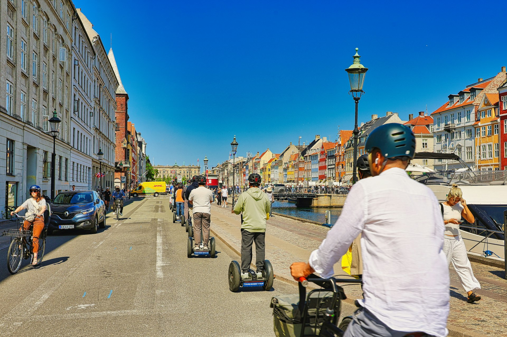
Segway PT. Consumer launch price $4,950.
The hype
As significant as the personal computer.Steve Jobs, per the leaked book proposal, 2001
Maybe bigger than the Internet.John Doerr, as reported by Time, December 2001
The customer
Nineteen years on sale, about 140,000 units: roughly what the plan projected for the first year.
Time’s 50 Worst Inventions, 2010: “the vehicle of choice for mall cops and lazy tourists.”
You want fast failure or long-term success. Medium-term failure is the trap: it eats savings, careers, and relationships.
Evidence-Based Entrepreneurship: the scientific method pointed at a business model design.
Treat every business model as a stack of guesses. Test the riskiest guess with the cheapest experiment, and let evidence steer.
Business model
→
Hypothesis
→
Prototype
→
Experiment
→
Evidence
→
Refine
Repeat until the evidence convinces you
In startup vocabulary: hypothesis = assumption · experiment = customer conversation or prototype · evidence = validated learning · iterate = pivot or persevere.
Vocabulary: Eric Ries, The Lean Startup (2011): validated learning; pivot or persevere.
40
The oldest algorithm we have
Think like a scientist.
Ask, research, hypothesize, experiment, analyze, share. Including the branch most founders skip: is the test itself valid? A broken experiment says nothing about the idea.
Every result, validated or not, feeds the next question.
Ask, research, hypothesize, experiment, analyze, share, and around again.
41
Talk to potential customers.
Hypotheses are tested on people. The full-term version of this course requires 100+ customer conversations. A semester version: 200.
The Mom Test, Rob Fitzpatrick: how to ask questions that get honest answers. More on Thursday.
Book: Rob Fitzpatrick, The Mom Test (2013). Cover shown for classroom identification.
42
The whole course on one slide
Four myths, four answers.
Myth 1 · ProcessGreat ideas strike you randomly.
→
A wide funnel: idea tournaments.
Myth 2 · GenerationI need a new technology or a new market.
→
Business Model Innovation.
Myth 3 · SelectionI’m a good judge of my own ideas.
→
Wisdom of the crowd: communal feedback.
Myth 4 · The Business PlanA great business plan gets you funded.
→
Evidence of product-market fit, gathered scientifically.
43
Break · 15 minutes
After the break: disciplined ideation.
You’ll generate your first ideas in the room. Grab coffee. You’ll register on Torneio mid-session; your five theses go in tonight.